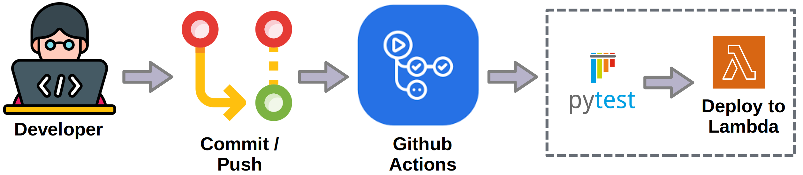
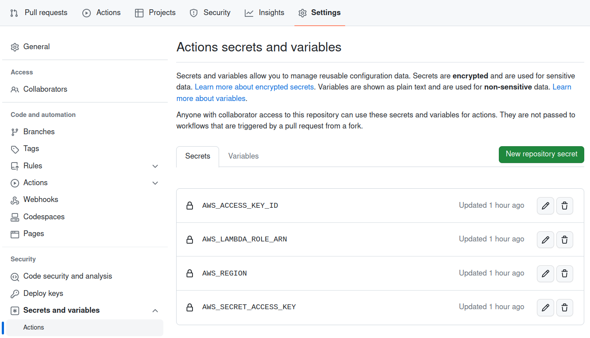

Automate Deploy
Let's automate the deployment of the lambda function on AWS.

Whenever a commit occurs in main, the action will be triggered and will run two jobs:
- The first will run the automatic tests.
- If the first job is successful, the second job will deploy the function to AWS.
Create Deploy Python Script
At some point in the action on github, we will need to communicate with AWS for the function to be deployed. This can be done in several ways, such as:
- Python script (like we have been doing in class)
- AWS CLI
- AWS SAM
Among others.
Let's do a first example using Python Script.
Question 1
Question 2
Question 3
Create Job: Github Action
Let's create a new job in the github action workflow.
Attention!
Check if your branch name is main.
Change if necessary.
Question 4
Tip! 1
Notice the new deploy-to-aws job!
The deploy-to-aws job is very similar to the previous one (repository checkout, install python, install dependencies). The main differences are:
-
Concurrency: Note that the job has
needs: build-and-test. This will define that jobs must run in sequence and never in parallel. So, if the test fails there will be no deploy! -
Variables: check the
envsection, where we define some secret variables. We will explore this topic further in the next subsection. -
ZIP: we will deploy the lambda function using ZIP. Thus, this file will be created inside the container and used immediately afterwards.
-
Run deploy file: The python script that creates the lambda function is called at the end of the job.
Secrets: Github Action
Secrets allow you to store sensitive information in your organization, repository, or repository environments. They are variables that you create in an organization, repository, or repository environment.
The secrets that you create are available to use in GitHub Actions workflows. We will use them to store AWS credentials, as it wouldn't make sense to keep a file in the repository with such information!
Tip! 2
GitHub Actions can only read a secret if you explicitly include the secret in a workflow.
This is why the env section exists in the workflow!
In order to find the repository secrets configuration, go to the repository site on github / settings / Secrets and variables / Actions.

Question 5
Answer
Both AWS_ACCESS_KEY_ID and AWS_SECRET_ACCESS_KEY are very sensitive and definitely secrets.
The AWS_LAMBDA_ROLE_ARN has our account id. It's not the end of the world for this information to leak, but it's best not to share it and leave it as a secret.
The AWS_REGION could be a variable (but let's use secrets for ease).
Other information such as the function name could be variables instead of being hard coded.
Question 6
Commit and Deploy!
Question 7
Question 8
Task
Question 9
Question 10
References
- Introducing MLOps. Chapter 6.
- Practical MLOps. Chapter 4.
- https://www.redhat.com/pt-br/topics/devops/what-is-ci-cd
- CI/CD Image: https://www.redhat.com/rhdc/managed-files/styles/wysiwyg_full_width/private/ci-cd-flow-desktop.png?itok=NNRD1Zj0
- Github DAG Image: https://docs.github.com/assets/cb-63715/mw-1440/images/help/actions/workflow-graph.webp
{kind=link}
{kind=link}